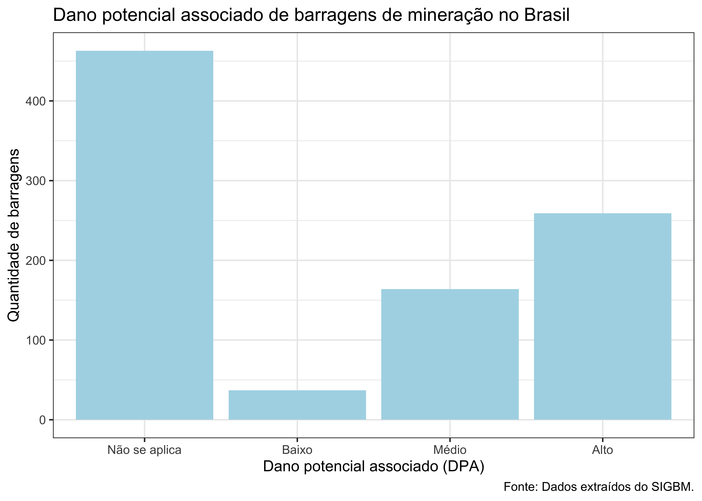

Barragens no Brasil
1 Objetivos
Este relatório tem como objetivo apresentar funcionalidades do R Markdown e do Quarto, utilizando dados públicos sobre barragens de mineração no Brasil.
Os objetivos específicos da análise são:
fazer uma tabela das barragens por estado;
fazer um gráfico do número de barragens por categoria de dano potencial associado;
2 Materiais e métodos
A base de dados disponibilizada pelo SIGBM - Sistema de Gestão de Segurança de Barragem de Mineração - apresenta dados referentes à barragens de mineração no território Brasileiro.

3 Barragens de mineração no Brasil
A base do SIGBM foi obtida no dia 08/11/2022 , e apresentou informações referentes à 923 barragens de mineração. A mediana do volume armazenado nas barragens é 128.000 m3.
Tabela 1: ?(caption)
| Estado | Número de barragens |
|---|---|
| MG | 354 |
| MT | 156 |
| PA | 114 |
| BA | 82 |
| SP | 68 |
| RO | 35 |
| GO | 22 |
| AP | 18 |
| MS | 18 |
| AM | 15 |

4 Barragens em MG
5 EXTRAS!
5.1 Equações
A equação \(4! = 4 \cdot 3 \cdot 2 \cdot 1\) diz que
A equação \[4! = 4 \cdot 3 \cdot 2 \cdot 1\] diz que
5.2 Referências
- Citando papers
Segundo LEÃO; SANTIAGO (2022), (LEÃO; SANTIAGO, 2022), (2022)
(LEÃO; SANTIAGO, 2022; SILVA; SILVA, 2021)
SILVA; SILVA (2021)
- Citar pacotes!
R CORE TEAM (2022)
WICKHAM et al. (2019)
diversos pacotes foram usados (FIRKE, 2021; WICKHAM et al., 2022)
5.3 Referência cruzada
Na tabela Tabela 1 vemos que o estado com o maior número de barragens é MG.
No gráfico Figura 1 vemos que …